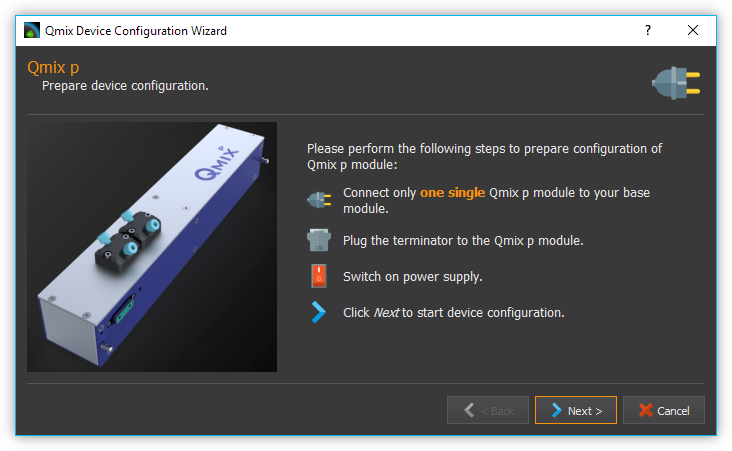

3. Creating Device Configurations
3.1. Introduction
In order to combine single devices according to your requirements and use them in CETONI Elements, you have to create a device configuration. Creating device configurations can be done using the Device Configurator which is integrated in the CETONI Elements software. The Device Configurator features the Device Configuration Wizard that guides you through the integration of your devices into your device configuration.
3.2. Starting the Device Configurator
You can start the Device Configurator by selecting the menu item from the main menu.

To use the Device Configurator to configure your devices, a valid license must be installed. If you only have a demo license, then only device configurations with simulated devices can be created and it is not possible to configure your devices with it.

Important
Activate your License before you start the Device Configurator if you want to configure your real devices.
3.3. Import a device database
The device configurator and the configuration wizard use a device
database devices.db` to read device-specifc parameters and settings
for configuration of the devices.
During the installation of the CETONI Elements software this database is already installed. If you use devices that are not yet listed in the device database (e.g. if your devices are newer than the latest CETONI Elements software version), you may need to import an updated version of the device database. This database can be found either on your installation media or your get it directly from CETONI.
When you start the device configurator, you will be asked if you want to
import a new device database. If your installation media contains the
file devices.db, you should import it now.
Tip
If your installation media does not contain a device database, your devices are already supported by the CETONI Elements software and you can skip the device database import.
Confirm the query by left-clicking the Yes button.

A file selection dialog opens. Select the database file
devices.dblocated in the root directory of the CETONI Elements CD (see figure below).
The device configurator now has an actual device database available.
Important
The device database contains important configuration information about your devices. You always have to import an actual device database if you purchase new devices from the CETONI GmbH.
As long as you don’t purchase new devices you needn’t import a device database on start of the device configurator. If you don’t want CETONI Elements to further ask for database import just check Do not ask me again and confirm by left-clicking No (see figure below).

If you want to import a device database in the future you can reach the import dialog by selecting from the main menu (see figure below).

Tip
You don’t have to import a device database on each start of the device configurator. As long as you don’t purchase any new devices, you don’t need to import a new device database.
3.4. Overview

The Device Configurator is divided into the following three parts:
Toolbar – Functions for creating, loading and saving device configurations, as well as starting the Device Configuration Wizard.
Device List – Selection of available devices.
Device configuration created by user.
3.5. Toolbar
The toolbar contains the following functions:
|
Creates a new, empty device configuration. |
|
Loads an existing device configuration. |
|
Saves the created device configuration. |
|
Saves the created device configuration using a new name. |
Sets all devices of the created device configuration to simulated. |
|
|
Starts the add-on plugins selection dialog. These are optional software extensions that CETONI has developed customer-specific, possibly on your behalf. |
|
Starts the Device Configuration Wizard. |
|
Restarts the software with the device configuration from the device configurator |
{kind=link}
3.6. Device Configuration Wizard

The Device Configuration Wizard guides you through the integration of your devices into your device configuration. You must execute the Device Configuration Wizard after:
creating a new device configuration or changing an existing one.
swapping devices or integrating a new device into an existing device configuration.
an update of the CETONI Elements software
Important
Device configurations and devices belong together. Always execute the Device Configuration Wizard if you want to change a device configuration or integrate a new device into an existing device configuration.
Your device configuration should always be created with the software version with which you want to use the configuration, otherwise errors may occur. If the device configuration was created with another software version, you will receive a warning message when the application is started.

If you see this warning, you should open the device configuration in the Device Configurator, save it and then configure all devices using the Configuration Wizard.
3.7. Creating a sample device configuration
The following example describes the creation of a device configuration containing a Nemesys S dosing module and a Qmix Q+ module.
Left-click on the Nemesys S dosing module listed in the device list ❶ and hold down the mouse button.
Drag the Nemesys dosing module into the device configuration ❷ holding the mouse button down. As soon as you release the mouse button the Nemesys dosing module is added to the device configuration. Alternatively, you can add a device by double-clicking on it in the device list.
Tip
You can add devices via drag & drop or by a double click.

Tip
You can remove devices from the device configuration by selecting the device by clicking it and then pressing the Delete key.
Proceed in the same way with the Qmix Q+ module.
Save your configuration under a meaningful name by clicking on the Save button ❸
Start the Device Configuration Wizard by left-clicking Configure ❹
Attention
Make sure that the mains voltage on your Base module or on your power supply is switched off before connecting or disconnecting modules to your system. Not doing so may result in damage or malfunction.
The Device Configuration Wizard advices you to follow these instructions:
Ensure that the Nemesys S module which is to be configured is connected to your Base module. Turn the Nemesys S power switch ON. The blue Power LED should now light up
Switch off all other modules that have a power switch
Remove all other modules from the setup, that do not have a power switch – in this case, that would be the Qmix Q+ module (Attention: Switch of the mains voltage at the Base module before removing or adding modules)
Ensure that the terminator is plugged into the last module of your setup – the Nemesys S in this case
Switch on the mains power switch on your Base module or on your power supply unit.
Check that the Nemesys S module is really the only device that is powered on now. The blue power LED of all other modules must be off

Important
During the configuration of a device, no other switched-on devices may be connected to the Base module, as otherwise errors may occur during the configuration or subsequent malfunctions.
Click Next to start device configuration
The Nemesys S pump is being configured. This may take a few seconds.

The Device Configuration Wizard displays the Nemesys S dosing module configured successfully. Left-click Next to proceed.

The Device Configuration Wizard advices you to follow these instructions (see image below):
Ensure that the Qmix Q+ module is connected to your base module
Switch off all other devices that have a power switch – in this case switch off the Nemesys S module. Alternatively, you can remove the Nemesys S pump from the base module and connect only the Qmix Q+ module.
Remove all other modules from the setup, that do not have a power switch
Ensure that the terminator is plugged into the last module of your setup
Switch on the mains power switch on your Base module or on your power supply unit.
Check that the Qmix Q+ module is really the only device that is powered on now. The blue power LED of all other modules must be off

Click Next to configure the QmixQ+ module.
On the next page check Import and activate new device configuration into CETONI Elements now. Doing so CETONI Elements activates the new device configuration and restarts after finishing the Device Configuration Wizard.

Prepare the restart of CETONI Elements with the created device configuration:
Switch off the Base module.
Plug the Nemesys dosing module and the Qmix Q+ module to the base module.
Plug the terminator.
Switch on the base module again.
Turn on the power switch of the Nemesys S pump
Finish the Device Configuration Wizard by left-clicking Finish

Confirm the software restart with the new device configuration.

CETONI Elements now offers the functions of the Nemesys S dosing module and the Qmix Q+ module.
3.8. Extending an existing device configuration
The following example shows how you can add another device to the configuration created in the previous section.
After start of the Device Configurator the device configuration currently loaded by the CETONI Elements software is shown. The green checks displayed on top of the devices indicate that these devices have already been configured.

If you want to change another device configuration as the one currently loaded by CETONI Elements, you have to load the desired device configuration using the Open button.

Add a further device via Drag & Drop as described in the previous section. The exclamation mark above the device points out that it has not been configured yet. The configuration can’t be used in this state.

Important
If a device configuration contains not configured devices, it is invalid and can’t be used yet.
Save the configuration and start the Device Configuration Wizard by clicking the Configure button.

If the software has already been connected to the plugged devices, the device configuration process can’t be continued. In this case the Device Configuration Wizard proposes to automatically restart the software and the Device Configurator. Click the Yes button if you agree.

The device configuration process known from the previous section starts. But this time the wizard proposes on the second page to exclude devices from the device configuration process that have already been configured. Just check Skip configured devices.

The Device Configuration Wizard directly continues with the configuration of the newly added device (Qmix P in this example).

Just finish the Device Configuration Wizard the same way you would have done if you had created a device configuration from scratch.
After restart the functionality of the new device is available to you.
3.9. Configuration of a single device
You can configure a single device from your configuration in the Device Configurator at any time - e. g. if you have exchanged a defective device for a new one. Simply right-click on the device to be configured and select the menu item .

The configuration wizard now guides you through the configuration of the individual device.
3.10. Simulated devices
You can set single devices or a whole device configuration to simulated. This is useful if you want create CETONI Elements scripts using devices not available at the moment. The CETONI Elements demo configuration for example completely consists of simulated devices. Proceed as follows in order to simulate a single device:
In the device configuration right-click the device you want to simulate.
Left-click the button Simulate

The device is marked as simulated. Save the device configuration. The next time you load this device configuration in CETONI Elements the simulated device will be available to you.

You can simulate a whole device configuration by left-clicking Simulate All in the main toolbar.

3.11. Optional Add-On Plugins
There are optional extensions of the software, which CETONI has developed, possibly on your behalf, according to customer specifications. However, certain plugins may not be required for a certain device configuration, or may not be suitable for this purpose. When creating and editing a device configuration, you can freely configure which optional plugins should be loaded with your device configuration.
Tip
The CETONI Elements software can be extended with customer-specific plugins. Please contact us if you need a specific adaptation of the software functionality.
If you only have a standard version of CETONI Elements installed, no optional add-on plugins will be available. Accordingly, the function for configuring optional add-on plugins is disabled (see figure below).

If you have installed a CETONI Elements add-on that contains optional plugins, this function is available (see figure below).

Important
Not every CETONI Elements add-on contains optional plugins. Many add-ons (e.g. Spectroscopy Add-On) contain only mandatory plugins that must be loaded to provide device functionality. Mandatory plugins cannot be selected using this function. These are always loaded automatically if the respective device (e.g. Qmix λ) has been configured.
If you click with the left mouse button on the Add-On Plugins function, the Add-On Plugins Selection Dialog appears. In the lower half of the dialog, there is a table that displays all available optional add-on plugins (see figure below).

You can display information about the Add-On plugin by moving the mouse over the respective table entry (see figure below).

To add an optional add-on plugin to your device configuration, check the box next to the plugin ❶ and then click Ok ❷. Finally, you must save the configuration ❸ to permanently apply the changes (see figure below).